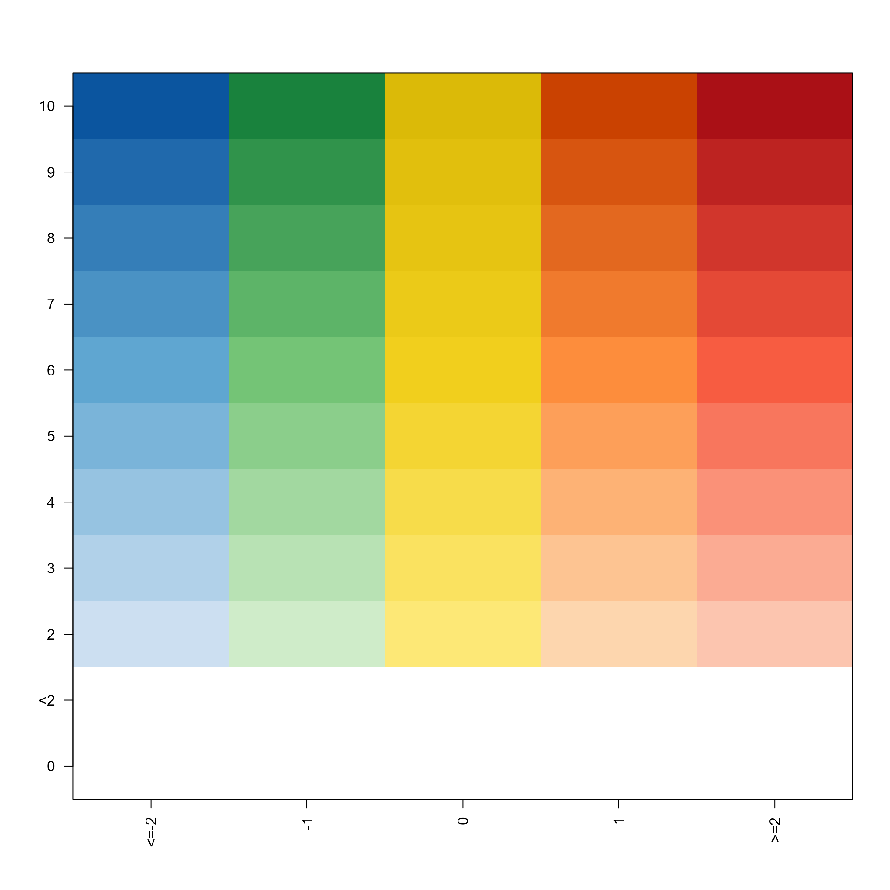
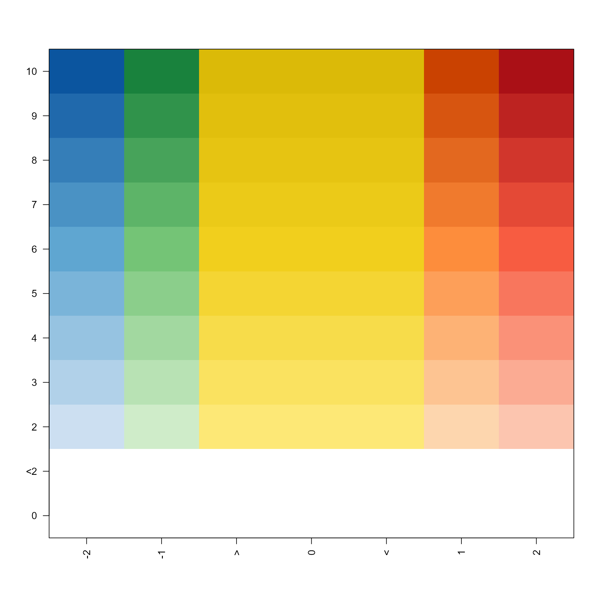
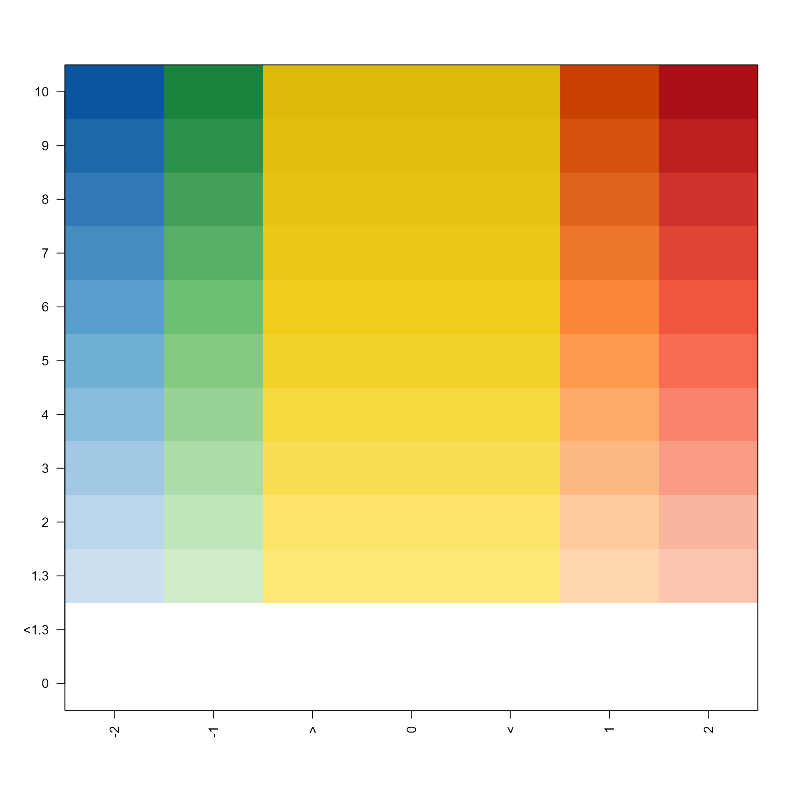

Bivariate color interpolation function with optional floors
Source:R/jamenrich-col-pvdir-xf.R
col_pvdir_xf.RdBivariate color interpolation function with optional floors
Usage
col_pvdir_xf(
p_cutoff = 0.01,
p_floor = 1e-10,
direction_cutoff = 0,
direction_max = 2,
color_non_hits = FALSE,
pretty.n = c(10, 5),
...
)Arguments
- p_cutoff
numericP-value threshold, default 0.01- p_floor
numericP-value lowest recognized value, default 1e-10- direction_cutoff
numericdirectional score cutoff, default 0 applies no cutoff.- direction_max
numericdirectional maximum recognized, default 2.- color_non_hits
logicalwhether to apply color when the P-value does not meet thep_cutoff, default FALSE uses white for non-hits.- pretty.n
integernumber of labels used withpretty()for rows and columns, respectively. Default is10and5.- ...
additional arguments are ignored.
See also
Other jam utility functions:
ashape(),
avg_angles(),
avg_colors_by_list(),
cell_fun_bivariate(),
collapse_mem_clusters(),
colorRamp2D(),
curateIPAcolnames(),
deconcat_df2(),
display_colorRamp2D(),
enrichList2geneHitList(),
find_colname(),
find_enrich_colnames(),
get_hull_data(),
get_igraph_layout(),
gsubs_remove(),
handle_igraph_param_list(),
isColorBlank(),
make_legend_bivariate(),
make_point_hull(),
mem_find_overlap(),
order_colors(),
rank_mem_clusters(),
rotate_coordinates(),
summarize_node_spacing(),
with_ht_opts(),
xyAngle()
Examples
col_fun <- col_pvdir_xf()
attr(col_fun, "row_labels")
#> [1] "0" "<2" "2" "6" "10"
display_colorRamp2D(col_fun, pretty.n=c(10, 5))

col_fun1 <- col_pvdir_xf(direction_cutoff=1)
attr(col_fun1, "row_labels")
#> [1] "0" "<2" "2" "6" "10"
display_colorRamp2D(col_fun1, pretty.n=c(10, 5))

col_fun <- col_pvdir_xf(
p_cutoff=0.05,
direction_cutoff=1
)
display_colorRamp2D(col_fun)
